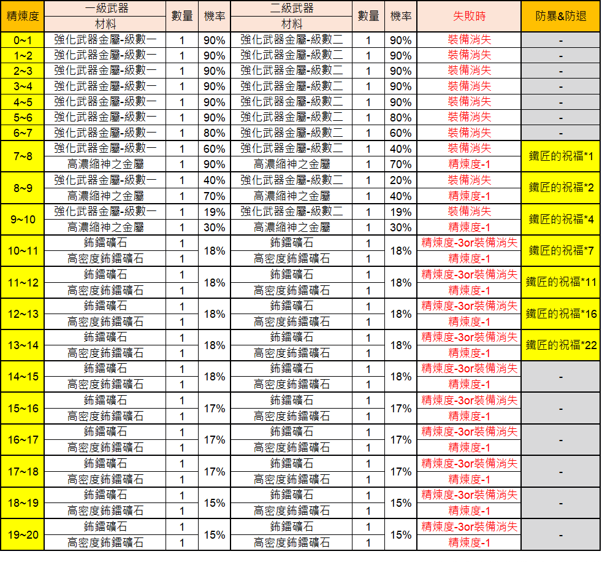
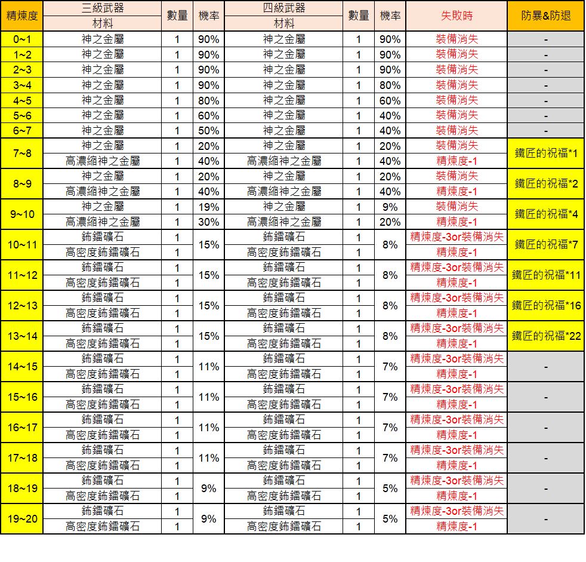
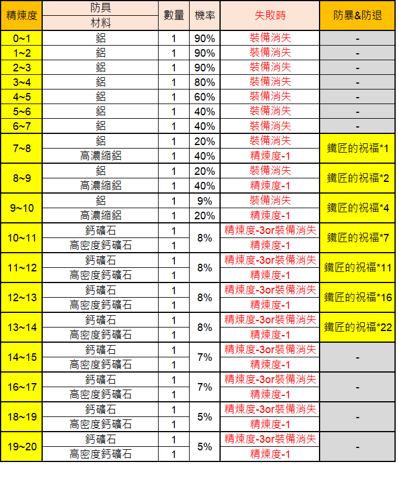
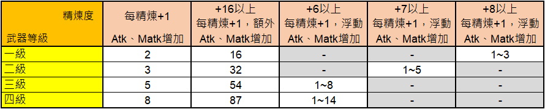
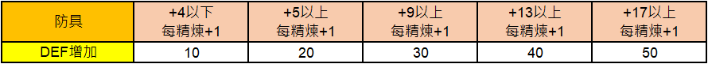
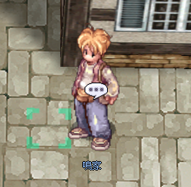
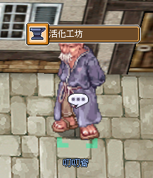
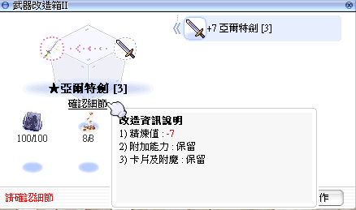

Aktivierungs-System ★ / ★★
Das TW-live Upgrade-System, mit dem Monster-Drop-Waffen zu ★ und ★★ hochgestuft, und klassische Rüstungen mit Enchant-Slots ausgestattet werden. Plus: das zukünftige kRO Stern-Grade-System (D/C/B/A) weiter unten.
🔨 Refine (精煉) — die Grundlage
Bevor wir zur Aktivierung kommen: das Refine-System ist die Voraussetzung für fast alles. In RO Zero findest du in jeder größeren Stadt einen Schmiede-Werkstatt-NPC, der Waffen und Rüstungen refinen kann. Der Refine-Wert (精煉度) gibt entsprechende Stat-Boni, und viele Endgame-Items entfalten ihre Fähigkeiten erst ab einer bestimmten Refine-Stufe.
🎲 Erfolgsraten (offizielle Tabellen, Stand 24.03.2026)

📋 Verstärkungs-Tabelle für Waffen — Deutsch aufklappen
Diese Tabelle zeigt die benötigten Materialien, Erfolgschancen und Konsequenzen bei Misserfolg für die Verstärkung von Waffen der Stufen 1 und 2 in Ragnarok Zero.
| Refine | Tier 1 Waffe Material | Menge | Chance | Tier 2 Waffe Material | Menge | Chance | Bei Misserfolg | Blacksmith Blessing |
|---|---|---|---|---|---|---|---|---|
| 0~1 | Weapon Refine Ore - Lv1 | 1 | 90% | Weapon Refine Ore - Lv2 | 1 | 90% | Equip destroyed | - |
| 1~2 | Weapon Refine Ore - Lv1 | 1 | 90% | Weapon Refine Ore - Lv2 | 1 | 90% | Equip destroyed | - |
| 2~3 | Weapon Refine Ore - Lv1 | 1 | 90% | Weapon Refine Ore - Lv2 | 1 | 90% | Equip destroyed | - |
| 3~4 | Weapon Refine Ore - Lv1 | 1 | 90% | Weapon Refine Ore - Lv2 | 1 | 90% | Equip destroyed | - |
| 4~5 | Weapon Refine Ore - Lv1 | 1 | 90% | Weapon Refine Ore - Lv2 | 1 | 90% | Equip destroyed | - |
| 5~6 | Weapon Refine Ore - Lv1 | 1 | 90% | Weapon Refine Ore - Lv2 | 1 | 80% | Equip destroyed | - |
| 6~7 | Weapon Refine Ore - Lv1 | 1 | 80% | Weapon Refine Ore - Lv2 | 1 | 60% | Equip destroyed | - |
| 7~8 | Weapon Refine Ore - Lv1 / Enriched Oridecon | 1 | 60% / 90% | Weapon Refine Ore - Lv2 / Enriched Oridecon | 1 | 40% / 70% | Equip destroyed / Refine-1 | Blacksmith Blessing *1 |
| 8~9 | Weapon Refine Ore - Lv1 / Enriched Oridecon | 1 | 40% / 70% | Weapon Refine Ore - Lv2 / Enriched Oridecon | 1 | 20% / 40% | Equip destroyed / Refine-1 | Blacksmith Blessing *2 |
| 9~10 | Weapon Refine Ore - Lv1 / Enriched Oridecon | 1 | 19% / 30% | Weapon Refine Ore - Lv2 / Enriched Oridecon | 1 | 19% / 30% | Equip destroyed / Refine-1 | Blacksmith Blessing *4 |
| 10~11 | Bradium / High Density Bradium | 1 | 18% | Bradium / High Density Bradium | 1 | 18% | Refine-3 or Equip destroyed / Refine-1 | Blacksmith Blessing *7 |
| 11~12 | Bradium / High Density Bradium | 1 | 18% | Bradium / High Density Bradium | 1 | 18% | Refine-3 or Equip destroyed / Refine-1 | Blacksmith Blessing *11 |
| 12~13 | Bradium / High Density Bradium | 1 | 18% | Bradium / High Density Bradium | 1 | 18% | Refine-3 or Equip destroyed / Refine-1 | Blacksmith Blessing *16 |
| 13~14 | Bradium / High Density Bradium | 1 | 18% | Bradium / High Density Bradium | 1 | 18% | Refine-3 or Equip destroyed / Refine-1 | Blacksmith Blessing *22 |
| 14~15 | Bradium / High Density Bradium | 1 | 18% | Bradium / High Density Bradium | 1 | 18% | Refine-3 or Equip destroyed / Refine-1 | - |
| 15~16 | Bradium / High Density Bradium | 1 | 17% | Bradium / High Density Bradium | 1 | 17% | Refine-3 or Equip destroyed / Refine-1 | - |
| 16~17 | Bradium / High Density Bradium | 1 | 17% | Bradium / High Density Bradium | 1 | 17% | Refine-3 or Equip destroyed / Refine-1 | - |
| 17~18 | Bradium / High Density Bradium | 1 | 17% | Bradium / High Density Bradium | 1 | 17% | Refine-3 or Equip destroyed / Refine-1 | - |
| 18~19 | Bradium / High Density Bradium | 1 | 15% | Bradium / High Density Bradium | 1 | 15% | Refine-3 or Equip destroyed / Refine-1 | - |
| 19~20 | Bradium / High Density Bradium | 1 | 15% | Bradium / High Density Bradium | 1 | 15% | Refine-3 or Equip destroyed / Refine-1 | - |
Die Tabelle unterscheidet zwischen normaler Aufwertung und der Nutzung von 'Enriched Oridecon' bzw. 'High Density Bradium'. Bei der Verwendung von 'Blacksmith Blessing' kann die Zerstörung der Ausrüstung verhindert werden.

📋 Verstärkungstabelle für Ragnarok Zero — Deutsch aufklappen
Diese Tabelle listet die benötigten Materialien, Erfolgschancen und Konsequenzen bei Misserfolg für die Waffenverstärkung in Ragnarok Zero auf.
| Refine Stufe | Stufe 3 Waffe: Material | Menge | Erfolgschance | Stufe 4 Waffe: Material | Menge | Erfolgschance | Bei Misserfolg | Schutz & Absicherung |
|---|---|---|---|---|---|---|---|---|
| 0~1 | Oridecon | 1 | 90% | Oridecon | 1 | 90% | Item Destroyed | - |
| 1~2 | Oridecon | 1 | 90% | Oridecon | 1 | 90% | Item Destroyed | - |
| 2~3 | Oridecon | 1 | 90% | Oridecon | 1 | 90% | Item Destroyed | - |
| 3~4 | Oridecon | 1 | 90% | Oridecon | 1 | 80% | Item Destroyed | - |
| 4~5 | Oridecon | 1 | 80% | Oridecon | 1 | 60% | Item Destroyed | - |
| 5~6 | Oridecon | 1 | 60% | Oridecon | 1 | 40% | Item Destroyed | - |
| 6~7 | Oridecon | 1 | 50% | Oridecon | 1 | 40% | Item Destroyed | - |
| 7~8 | Oridecon / Enriched Oridecon | 1 / 1 | 20% / 40% | Oridecon / Enriched Oridecon | 1 / 1 | 20% / 40% | Item Destroyed / Refine -1 | Blacksmith Blessing*1 |
| 8~9 | Oridecon / Enriched Oridecon | 1 / 1 | 20% / 40% | Oridecon / Enriched Oridecon | 1 / 1 | 20% / 40% | Item Destroyed / Refine -1 | Blacksmith Blessing*2 |
| 9~10 | Oridecon / Enriched Oridecon | 1 / 1 | 19% / 30% | Oridecon / Enriched Oridecon | 1 / 1 | 9% / 20% | Item Destroyed / Refine -1 | Blacksmith Blessing*4 |
| 10~11 | Bradium / High Density Bradium | 1 / 1 | 15% | Bradium / High Density Bradium | 1 / 1 | 8% | Refine -3 or Item Destroyed / Refine -1 | Blacksmith Blessing*7 |
| 11~12 | Bradium / High Density Bradium | 1 / 1 | 15% | Bradium / High Density Bradium | 1 / 1 | 8% | Refine -3 or Item Destroyed / Refine -1 | Blacksmith Blessing*11 |
| 12~13 | Bradium / High Density Bradium | 1 / 1 | 15% | Bradium / High Density Bradium | 1 / 1 | 8% | Refine -3 or Item Destroyed / Refine -1 | Blacksmith Blessing*16 |
| 13~14 | Bradium / High Density Bradium | 1 / 1 | 15% | Bradium / High Density Bradium | 1 / 1 | 8% | Refine -3 or Item Destroyed / Refine -1 | Blacksmith Blessing*22 |
| 14~15 | Bradium / High Density Bradium | 1 / 1 | 11% | Bradium / High Density Bradium | 1 / 1 | 7% | Refine -3 or Item Destroyed / Refine -1 | - |
| 15~16 | Bradium / High Density Bradium | 1 / 1 | 11% | Bradium / High Density Bradium | 1 / 1 | 7% | Refine -3 or Item Destroyed / Refine -1 | - |
| 16~17 | Bradium / High Density Bradium | 1 / 1 | 11% | Bradium / High Density Bradium | 1 / 1 | 7% | Refine -3 or Item Destroyed / Refine -1 | - |
| 17~18 | Bradium / High Density Bradium | 1 / 1 | 11% | Bradium / High Density Bradium | 1 / 1 | 7% | Refine -3 or Item Destroyed / Refine -1 | - |
| 18~19 | Bradium / High Density Bradium | 1 / 1 | 9% | Bradium / High Density Bradium | 1 / 1 | 5% | Refine -3 or Item Destroyed / Refine -1 | - |
| 19~20 | Bradium / High Density Bradium | 1 / 1 | 9% | Bradium / High Density Bradium | 1 / 1 | 5% | Refine -3 or Item Destroyed / Refine -1 | - |
Die Spalte 'Schutz & Absicherung' gibt die Anzahl der benötigten Blacksmith Blessing an, um das Item bei einem Fehlschlag vor der Zerstörung zu bewahren.

📋 Verstärkungstabelle für Rüstungen — Deutsch aufklappen
Diese Tabelle zeigt die Erfolgsraten, Materialien und Konsequenzen bei einem Fehlschlag für die Verstärkung von Rüstungsgegenständen in Ragnarok Zero.
| Refinestufe | Material | Menge | Erfolgsrate | Bei Fehlschlag | Schutz & Abbauverhinderung |
|---|---|---|---|---|---|
| 0~1 | Enriched Elunium | 1 | 90% | Equipment destroyed | - |
| 1~2 | Enriched Elunium | 1 | 90% | Equipment destroyed | - |
| 2~3 | Enriched Elunium | 1 | 90% | Equipment destroyed | - |
| 3~4 | Enriched Elunium | 1 | 80% | Equipment destroyed | - |
| 4~5 | Enriched Elunium | 1 | 60% | Equipment destroyed | - |
| 5~6 | Enriched Elunium | 1 | 40% | Equipment destroyed | - |
| 6~7 | Enriched Elunium | 1 | 40% | Equipment destroyed | - |
| 7~8 | Enriched Elunium | 1 | 20% | Equipment destroyed | Blacksmith Blessing *1 |
| 7~8 | HD Elunium | 1 | 40% | Refine -1 | Blacksmith Blessing *1 |
| 8~9 | Enriched Elunium | 1 | 20% | Equipment destroyed | Blacksmith Blessing *2 |
| 8~9 | HD Elunium | 1 | 40% | Refine -1 | Blacksmith Blessing *2 |
| 9~10 | Enriched Elunium | 1 | 9% | Equipment destroyed | Blacksmith Blessing *4 |
| 9~10 | HD Elunium | 1 | 20% | Refine -1 | Blacksmith Blessing *4 |
| 10~11 | Bradium | 1 | 8% | Refine -3 or Equipment destroyed | Blacksmith Blessing *7 |
| 10~11 | HD Bradium | 1 | 8% | Refine -1 | Blacksmith Blessing *7 |
| 11~12 | Bradium | 1 | 8% | Refine -3 or Equipment destroyed | Blacksmith Blessing *11 |
| 11~12 | HD Bradium | 1 | 8% | Refine -1 | Blacksmith Blessing *11 |
| 12~13 | Bradium | 1 | 8% | Refine -3 or Equipment destroyed | Blacksmith Blessing *16 |
| 12~13 | HD Bradium | 1 | 8% | Refine -1 | Blacksmith Blessing *16 |
| 13~14 | Bradium | 1 | 8% | Refine -3 or Equipment destroyed | Blacksmith Blessing *22 |
| 13~14 | HD Bradium | 1 | 8% | Refine -1 | Blacksmith Blessing *22 |
| 14~15 | Bradium | 1 | 7% | Refine -3 or Equipment destroyed | - |
| 14~15 | HD Bradium | 1 | 7% | Refine -1 | - |
| 16~17 | Bradium | 1 | 7% | Refine -3 or Equipment destroyed | - |
| 16~17 | HD Bradium | 1 | 7% | Refine -1 | - |
| 18~19 | Bradium | 1 | 5% | Refine -3 or Equipment destroyed | - |
| 18~19 | HD Bradium | 1 | 5% | Refine -1 | - |
| 19~20 | Bradium | 1 | 5% | Refine -3 or Equipment destroyed | - |
| 19~20 | HD Bradium | 1 | 5% | Refine -1 | - |
Bei Verwendung von 'Blacksmith Blessing' wird die Zerstörung des Gegenstandes bei einem Fehlschlag verhindert.
⚔️ Waffen-Refine — Stat-Bonus

📋 Waffen-Refinement-Tabelle — Deutsch aufklappen
Diese Tabelle zeigt die Steigerung von ATK und MATK basierend auf der Waffenstufe und dem Refine-Level.
| Waffen-Level | ATK/MATK Zuwachs pro Refine | Zusätzlicher ATK/MATK Zuwachs ab +16 | Variabler ATK/MATK Zuwachs ab +6 | Variabler ATK/MATK Zuwachs ab +7 | Variabler ATK/MATK Zuwachs ab +8 |
|---|---|---|---|---|---|
| Level 1 | 2 | 16 | - | - | 1~3 |
| Level 2 | 3 | 32 | - | 1~5 | - |
| Level 3 | 5 | 54 | 1~8 | - | - |
| Level 4 | 8 | 87 | 1~14 | - | - |
Die Tabelle stellt die Boni bei der Waffenaufwertung dar. '浮動' (Fudong) bezieht sich auf einen schwankenden oder variablen Wertbereich.
🛡️ Rüstungs-Refine — Stat-Bonus

📋 Verteidigungsbonus durch Ausrüstungs-Refinement — Deutsch aufklappen
Diese Tabelle zeigt den zusätzlichen DEF-Wert, der für Rüstungen bei verschiedenen Refine-Stufen pro +1 Refinement gewährt wird.
| Ausrüstung | +4 oder niedriger (pro Refine +1) | +5 oder höher (pro Refine +1) | +9 oder höher (pro Refine +1) | +13 oder höher (pro Refine +1) | +17 oder höher (pro Refine +1) |
|---|---|---|---|---|---|
| DEF-Zuwachs | 10 | 20 | 30 | 40 | 50 |
Die Tabelle illustriert die inkrementelle Erhöhung des DEF-Werts je nach Refine-Level der Rüstung.
⭐ Was ist Aktivierung (活化)?
Aktivierung ist das TW-live System, mit dem du Monster-Drop-Ausrüstung durch Material-Einreichung re-craftest — mit Erhalt bestehender Karten, Enchants und Zufalls-Optionen. Es gibt drei Aktivierungs-Zweige:
- Stufe-2 ★ Waffen — einfache Re-Forge
- Stufe-2 ★★ Waffen — zweite Stufe (seit Patch 23.03.2026)
- Klassische Rüstungen — zwei Varianten: „Stabil" und „Intensiv" (激烈)
📍 Zwei NPCs in Prontera
Werkstatt-Lehrling Mingjia (工坊學徒 鳴家)
Position: prontera 272 264
Funktion: Token-Wechsler. Bringt Monster-Drop-Ausrüstung, erhalte ★ Forging-Token; bringt bereits aktivierte Waffen, erhalte ★★ Forging-Token.
Großvater Taodaozhai (叨叨齋爺爺)
Position: prontera 272 260
Funktion: Der eigentliche Aktivator. Öffnet das Aktivierungs-UI, wenn du die richtigen Materialien mitbringst.
🧾 Materialien & Regeln
Stufe-2 ★★ Waffen (seit März 2026)
Regel: Refine-Wert -3 · Karten, Enchants, Zufalls-Optionen bleiben erhalten
Material: 3× ★★-Forging-Token + 30× Goblin-Splittermünzen (哥布靈碎幣)
Stufe-2 ★ Waffen
Regel: Refine-Wert -7 · Karten, Enchants, Zufalls-Optionen bleiben erhalten
Material: 100× ★-Forging-Token + 8× Goblin-Splittermünzen
Klassische Rüstungen — „Stabil" (穩定)
Regel: Refine-Wert -3 · Karten, Enchants, Zufalls-Optionen bleiben erhalten
Material: 100× ★-Forging-Token + 30× Goblin-Splittermünzen
Klassische Rüstungen — „Intensiv" (激烈)
Regel: Refine-Wert -7 · Karten, Enchants, Zufalls-Optionen bleiben erhalten
Material: 10× ★-Forging-Token + 3× Goblin-Splittermünzen

📋 NPC-Darstellung — Deutsch aufklappen
Ein Bild eines NPCs namens '鳴家' (Minga), der in der Spielwelt von Ragnarok Zero steht.
Der angezeigte NPC-Name ist '鳴家'.

📋 NPC Interaktion — Deutsch aufklappen
Ein Screenshot eines NPCs namens 'Wuwuzhai' (切切齋) vor der Werkstatt 'Refine Workshop' (精煉工坊).
- NPC Name: Wuwuzhai (切切齋)
- Standort/Interface: Refine Workshop (精煉工坊)
Die Bezeichnung '精煉工坊' wird im Spiel offiziell als 'Refine Workshop' geführt.

📋 Waffenmodifikationsbox II — Deutsch aufklappen
Das UI zeigt den Prozess der Waffenmodifikation für ein '+7 Arthe Sword [3]'.
- Waffenmodifikationsbox II
- +7 Arthe Sword [3]
- ★ Arthe Sword [3]
- Details bestätigen
- Modifikationsdetails:
- 1) Refine: -7
- 2) Zusätzliche Attribute: Beibehalten
- 3) Karten und Verzauberungen: Beibehalten
- Details bestätigen
- Bestätigen
Die Modifikation reduziert den Refine-Wert der Waffe um 7 Stufen, während Karten, Verzauberungen und Zusatzattribute erhalten bleiben.
⚔️ Bereits aktivierbare Gruppen
Stufe-2 ★ Waffen
Der Launch-Pool, seit August 2025. Umfangreiche Waffen-Listen.
Stufe-2 ★★ Waffen NEW
Seit Patch 23./24./31.03.2026 aktiv. Die „zweite Welle" mit stärkeren Boni an höheren Refine-Schwellen.
Klassische Rüstungen
Seit Patch Februar 2026. Beide Varianten (Stabil / Intensiv).
🔬 Aktivierbare Zufalls-Optionen
Aktivierte Waffen können zusätzlich mit Physischen und Magischen Magiekristall-Steinen enchantet werden. Offizielle Option-Liste: 二級★武器附加能力.
📊 ★★ Waffen — Stat-Details
Die vollständigen Stat-Tabellen aller ★★-Waffen (4 Patch-Wellen) mit Stat-Boni, Refine-Schwellwerten und Material-Kosten findest du auf der dedizierten Seite:
🌟 ★★-Waffen Liste — komplette Stat-Übersicht
21 Waffen über 4 Patch-Wellen (März 2026 und davor). Einzelne Stat-Karten mit Refine-Boni +7/+9/+11, Class-Locks und Sonder-Effekten.
⭐ ★-Waffen Liste — Basis-Aktivierung
17 ★-Waffen (3 Patch-Wellen). Voraussetzung für ★★-Upgrade.
🛡️ Classic-Rüstung Aktivierung
7 klassische Rüstungsteile mit „Stabil"- und „Intensiv"-Modus.
💡 Strategie-Empfehlungen
- Erst Refine, dann Aktivieren: Aktivierung reduziert Refine um -3 bis -7 — also erst auf +11 oder mehr refinen, dann aktivieren
- Goblin-Splittermünzen-Farm: Kernressource — Sourcing über aktuelle Events / Drop-Quests prüfen (variiert per Patch)
- ★ vor ★★: Bereits aktivierte Waffe ist Voraussetzung für ★★-Upgrade. Plane die Materialkette
- Kein Cards/Enchants-Verlust: Anders als Refine-Break wird nichts zerstört — Aktivierung ist risikoarm, nur Refine-Wert fällt
- Kombiniere mit Schmied-Segen: Nach Aktivierung das Refine wieder hoch bringen mit Schmied-Segen (kein Break bei +7–+12)
⭐ kRO-Stellar-Grade (Future)
Das kRO Grade-System ist ein separates Upgrade zusätzlich zum Refining. Nur anwendbar auf Level-5-Waffen und Level-2-Rüstungen — das heißt fast alles Endgame-Gear (Trans+).
📊 Grade-Progression
No Grade → D → C → B → A
Refine-Bonus pro Grade (Waffen)
| Grade | Refine-Bonus | Beispiel (8 ATK/+1 →) |
|---|---|---|
| No Grade | Standard | 8 ATK/+1 |
| D | +10% | ~9 ATK/+1 |
| C | +25% | 10 ATK/+1 |
| B | +50% | 12 ATK/+1 |
| A | +100% | 16 ATK/+1 |
📋 Schritt-für-Schritt Anforderungen
| Schritt | Refine-Minimum | Edelstein | Etel-Kosten | Basis-Erfolg |
|---|---|---|---|---|
| No Grade → D | +9 (besser +11) | 7× Etel Aquamarine | 21 Etel Stone (105 Dust) + 7 Aquamarine | 40% |
| D → C | +9 Grade D | 7× Etel Topaz | 42 Etel Stone (210 Dust) + 7 Topaz | 30% |
| C → B | +9 Grade C | 7× Etel Amethyst | 70 Etel Stone (350 Dust) + 7 Amethyst | 20% |
| B → A | +9 Grade B | 14× Etel Amber | 210 Etel Stone (1050 Dust) + 14 Amber | 10% |
Modifiers: +10% pro Blessed Etel Dust · +10% während Refine/Grade-Event · +10% bei +16 Refine
💀 Failure-Regeln
- Grade-Failure → Refine drops by 1, Materials lost
- Existing Grade bleibt erhalten
- Cards/Enchants/Options bleiben erhalten
- Refining (separates System) über Safety-Cap BREAKS by default — nicht Grading!
- HD-Ores: prevent Break, only drop Refine by 1
- Blacksmith Blessing: keep Original Refine on Fail (usable +7 bis +12)
⭐ Grade-A Unique Bonuses
Über den +100% Refine-Bonus hinaus haben einige Items spezielle conditional Grade-A-Effekte:
- Cannon Spear: Grade A + Refine ≥ +14 → +70% Damage
- Crimson Series: Grade A enables full ATK²-Scaling up to +15 mit extra MATK/ATK-Lines
- Viele Lv-5-Weapons: Grade A unlockt Bonus-Auto-Cast, Racial-Damage-Tiers, Refine-Gated Lines
- Lv-2-Armors: Grade A typischerweise extra Refine-Gated MaxHP%/Resist-Line
📊 Etel-Materialien
| Material | Tier | Source |
|---|---|---|
| Etel Dust | Base | 2,2–7,7% Drop von Lv 200+ Mobs (Niflheim Dun, Rudus F4, Amicitia, Bio Lab 5) · auch Fever/Champion |
| Etel Stone | Tier-2 | Craft: 5 Etel Dust → 1 Etel Stone |
| Etel Refined Dust | Tier-3 | Craft aus Etel Stones |
| Etel Crystal | Tier-4 | Craft aus Etel Refined Dust |
| Blessed Etel Dust | Boost | Cash-Shop / Event. +10% Success. Returns +1 on Failure @ +16 Refine |
| Etel Aquamarine/Topaz/Amethyst/Amber | Step-Gated | Craft @ Grademk: 1 Plain Gem (Morroc Jeweler) + Etel Stones/Dust |
📅 Refine/Grade-Event-Schedule
Boost: +10% Grade-Success-Rate (stackt mit Blessed Etel Dust +10%).
TWRoZ Anniversary/Seasonal Booster Event gibt zusätzlich Safe-+9-Refine-Boxes.
💰 Kosten-Analyse: No Grade → Grade A
Statistisch (mit +10% Blessed Etel Dust):
| Schritt | Effektive Rate | Erwartete Versuche | Dust/Versuch | Erwarteter Gesamt-Dust |
|---|---|---|---|---|
| → D | 50% | 2 | 105 | ~210 |
| → C | 40% | 2,5 | 210 | ~525 |
| → B | 30% | 3,33 | 350 | ~1.165 |
| → A | 20% | 5 | 1.050 | ~5.250 |
| TOTAL | ~13 Versuche | ~7.150 Etel Dust + ~70 Gems | ||
Plus 40–60 HD-Ores pro Cycle für Re-Refining. Worst-Case: 15.000+ Etel Dust für No Grade +0 → Grade A +20.
🛠️ HD / Enriched / Blacksmith Blessing
- HD Elunium/Oridecon: Gleiche Rate wie Enriched, Failure DEGRADES nur um 1 (nicht Break)
- Enriched: Höhere Success, aber BREAKS on Failure
- Blacksmith Blessing: Usable +7 bis +12, Failure PRESERVES Original Refine
- Recipe @ Thor's Flame für 5M Zeny
- BS Blessing Shards droppen von Fever/Champion-Monsters